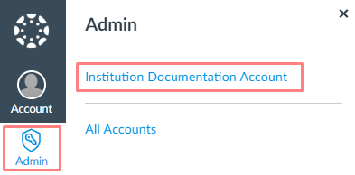
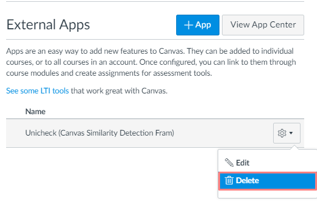

setting up Canvas Plagiarism Detection integration
We recommend to install Unicheck app to Canvas administrator account/sub-account and make it available for multiple courses. If you need Unicheck only for certain courses in your account, activate it for these courses. Account level installation prevents difficulties caused by multiple separate integrations for each sub-account or course.
Part 1. integrate On Unicheck side
Part 2. integrate On Canvas side
Part 1: integrate On Unicheck side
- At corp.unicheck.comn your Unicheck account go to the Integration tab.
- Choose LMS Integration and click Create LMS Integration button.
- Click Canvas Similarity Detection Integration. (Make sure you’ve chosen Canvas native integration type.) If you don’t have this button, contact your account manager to add it.
Step1 - Name integration
Type the name of your integration. Click Next.
Step 2 - Generate API credentials
- Copy and save Register URL.You will need it during the 2nd part of integration to install Unicheck app in Canvas when manually choosing configuration type.
- Click Ok, I’m Done and then Next.
Step 3 - Configure administrator settings
Configure Global settings during installation and click Save as default button. Or click Skip for now button to configure these settings later. Detailed description is provided in the Administrator guide "How to configure global Unicheck settings".
Step 4 - Configure instructor settings
Configure Global instructor settings during installation and click Save as default button. Or click Skip for now button to configure these settings later. Detailed description is provided in the Administrator guide "How to configure global Instructor settings".
Click Take me to My Integrations.

It takes you to your active integration, where you can find your Register URL.
Integration on Unicheck side is completed.
Part 2: integrate on Canvas Side
Unicheck app supports account, sub-account and course level installations. Once logged in to Canvas Learning Management System in the Administrator role please select top-level account of your institution.
- Go to Settings.
- Go to the Apps tab.
- Click the View App Configuration button.
- Click +App button.
- From Configuration type drop-down list choose By LTI 2 registration URL.
- Provide your Launch URL. It was generated on Step 2 of Integration on Unicheck side, named Register URL.
- After providing Registration URL click Launch Registration Tool button.
- Enable the installation.
- Installation is complete on Canvas side. This is the end of the setup.
Next steps would be to make the first submission and run a test.

Note! If you delete Unicheck integration in Canvas (check illustration), you will have to create a new LMS integration in the Unicheck Administrator account. It is not possible to reuse details of deleted integration.